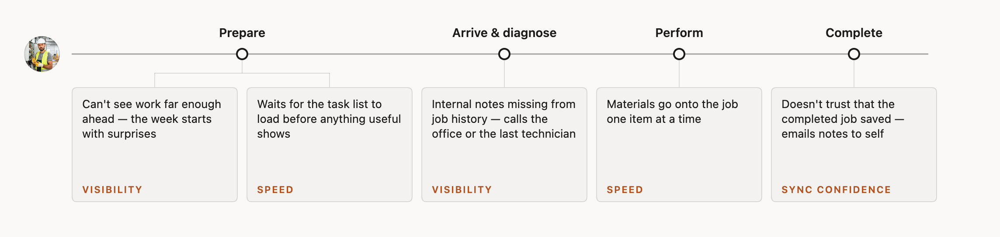
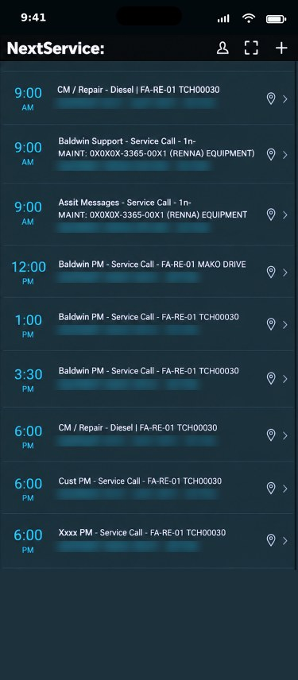
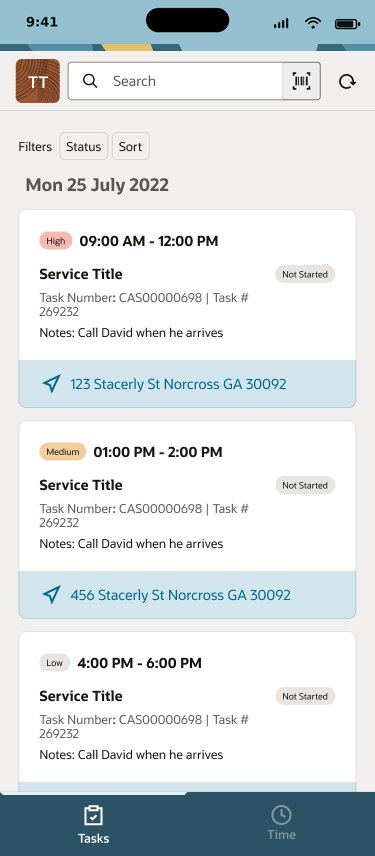
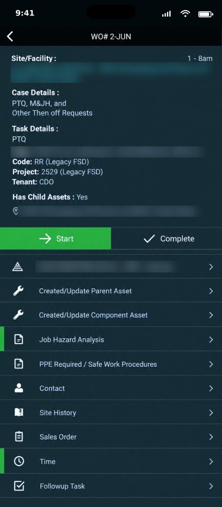
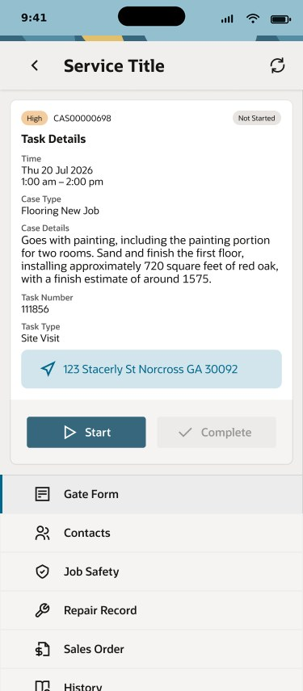

One job, three people, one record
Field service is a service design problem before it is a screen design problem. It begins and ends with a customer: a machine fails, they report it, they wait, they accept a quote, they sign off the work and say how it went. Between the request and the signature, the work happens in two places that depend on each other. In the office, an operator assigns jobs on NetSuite’s Scheduler board — by skill, proximity, priority and the asset being serviced. In the field, a technician works the job on a phone: where to go, who the customer is, what the asset’s history says, which parts went in, what the customer signed. NetSuite is the record they share.
So this was a multi-touchpoint, multi-persona service, not an app to redesign. The product came to NetSuite through an acquisition and still looked and behaved like the company it came from. Our team’s remit was the whole service: one NetSuite brand across office and field, and a better experience end to end. We worked from the outside in — a blueprint of the whole service, the day of each person in it, then the technician’s app redesigned around that day, the Scheduler restyled, the design system applied to both, and, as a concept, an AI agent behind them. The blueprint was not a deliverable; it was how we saw the app as one touchpoint among three.
![Service blueprint in four stages — Prepare, Arrive and diagnose, Perform, Complete — with four lanes: the customer on top (reports a fault, accepts the diagnosis and quote, waits on site, signs off and rates the visit), the technician on the mobile app, the operator on the Scheduler, and NetSuite as the shared record. Dashed lines separate the lanes and accent arrows mark the handoffs: visit confirmed, diagnosis and quote, signature between customer and technician; assignment, job started, parts and status, completed between technician and operator; work order, inventory and labour, billing and next service into the record.](media/FSM/service-blueprint-faf9f7@2x.png?v=20261101c)
The service blueprint I worked from. The customer on top, reached in person and by message; the technician on the phone; the operator on the Scheduler; NetSuite as the record behind all three. The accent arrows are the handoffs; the research findings cluster around them.
Redesigning the technician’s mobile app: starting from the research
The team’s field research — interviews with technicians across service companies and an end-to-end journey map of a technician’s day — had already named where the first release of the app got in the way. Technicians could not see work far enough ahead, so the week began with surprises. They waited for the task list to load before anything useful showed. Internal notes were missing from a job’s history, so they called the office or the previous technician. Materials went onto a job one item at a time. And some did not trust that a completed job had saved, so they emailed their own notes to themselves as a backup.
Read as a service enhancement rather than as a list of interface bugs, those are three failures of the loop: the office’s plan does not reach the field early enough, the progress of work is slowed by the record, and the field’s work does not reliably reach the office. Visibility, speed and sync confidence became the brief for the redesign.

The end-to-end journey of a day in the field, with the research findings placed where they bite. Each one is a handoff that failed, not a screen that failed.
Task list — before and after


Task details — before and after


Design mockups for the redesign, with sample data. Customer details in the acquired app’s screens are blurred.
Before and after, at a glance
| Before | After | |
|---|---|---|
| Task list | Every job a code, every row the same weight; nothing signals priority. | Cards show priority, time window, the office’s note and the address at a glance. |
| Task details | Reference numbers first; a flat list of sub-records to hunt through. | Job context first, in working order; each record one tap away and clearly named. |
| Capture flow | Separate forms for parts, labour, photos and signature; materials added one at a time. | One capture flow; materials picked as a group; fewer taps to close a job. |
| Status | Ambiguous icons; no clear confirmation that work was saved or sent. | Plain words — saved on device, syncing, confirmed — and an explicit confirmation on completion. |
| Visual language | The acquired company’s design system, on the board and the app alike. | NetSuite’s design system and brand; field and office read as one product. |
Reimagining the service with an agent
Concept, 2026. Not shipped. The AI service design covers the whole loop; what follows is one slice of it.
NetSuite was moving AI across the platform at the time, and the obvious question — where can we add AI to this app — was the wrong one. The service question was better: which moments in this loop are heavy, repetitive or anxious, and whom should an agent serve? The answer was both sides of the office–field loop, one agent per persona. The customer gets no agent of their own: they hear from the service in plain messages that a person released or policy allowed.
For the technician, a field assistant at the moment of work. A brief for tomorrow’s jobs drawn from history and notes. Capture by voice or photo, turned into a structured record of parts, labour and readings. A nudge for what is left to close, and sync status in plain language. The agent carries the admin so the technician stays on the customer and the equipment.
For the operator, a dispatch assistant for the day’s changes. When a job overruns or a part arrives early, it proposes reassignments that respect skills, location, parts on hand and the customer’s window, explains why, and leaves the decision to the scheduler. It closes the loop the other way, too: a completed record updates the board without a phone call.
The framework: who proposes, who decides. The principle came from NetSuite’s AI UX patterns work: the agent proposes, the person decides, and the more a mistake would cost, the more the person sees — quiet help for small reversible steps, explicit confirmation where a wrong move costs money or a customer. Applied to the blueprint, every moment gets the same questions, and the answers set how much the agent may do on its own. The balance shifts from moment to moment, and that shift is the design.
![End-to-end service blueprint with the agent overlay. Eleven phases from Request to Follow-up, grouped into before the visit, the day, and after. Lanes top to bottom: measures, evidence, customer actions, line of interaction, onstage technician and mobile app, line of visibility, backstage operator and agent, line of internal interaction, supporting processes. One box per step, arrows between boxes across the lines, and L0 to L4 badges on the boxes where the agent takes part. The mid-day change column is outlined.](media/FSM/service-blueprint-agent@2x.png?v=20261101b)
The whole loop with the agent in it: every step for the customer, the technician and the operator, the agent backstage, NetSuite beneath. Plain boxes are the service as it runs; badges mark where the agent takes part and how much it may decide. The outlined column, the mid-day change, is the slice shown below. Click to enlarge.
To make that balance explicit rather than a matter of taste, I graded every moment on the blueprint — across the technician, the operator, the customer and the agent’s own backstage work — with the same six questions in the same order. Does the act commit something outside the system: a promise, a record, money? Is it a formal act only a person may perform? Does it reach the customer directly, and does policy allow it to go unattended? Does it change someone else’s plan? Is the agent’s input complete and trusted, and is there a single best answer? Can it be undone at no cost? Each moment lands on one of five levels: the person acts alone; the agent informs and the person decides; the agent offers options with the trade-offs; the agent proposes one answer for a one-tap confirm; or the agent acts, with undo when hands are free and a log entry when they are not.
Who decides? Every scenario leaves the dock on the left, is routed through the six questions and lands on one of five autonomy levels on the right. Built as an interactive prototype; shown here as a recording.
A slice of the redesign: the mid-day change
One slice, end to end: an urgent job arriving when nobody is free, followed across all three touchpoints — the operator’s Scheduler, the technician’s phone and the customer’s text message. Multi-touchpoint service design in miniature: one event, three people, three surfaces, one record. Each step lands on a different level of the tree above, and the level is named on each step.
The other moments on the blueprint were redesigned the same way: different balances of the same two verbs, which is the point. The framework is the design; the screens are instances of it.
What I learned
Redesigning a live product is its own discipline. The research was done; the work was to honour it, to make the app behave like the journey map and the blueprint. Most of the value came from restraint: removing steps, exposing the one piece of context a technician needed at that moment, and making the system’s state honest so people stopped working around it.
The agent exploration taught me to start from the service, not the model, and to settle the framework before the screens: decide, moment by moment, who proposes and who decides, then let each screen be an instance of that. Putting an agent on both sides of the loop, with a person deciding, was the only version that respected how the work is actually done — and it is the version I would build first.